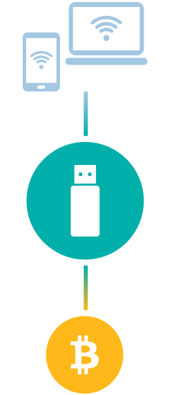

MENU
ATESORAMIENTO
Para atesorar Bitcoins primero hay que entender y definir como y donde guardarlos de manera segura, minimizando al máximo los potenciales riesgos.
La clave es entender que, no importa que tipo o marca de Wallet (Billetera Virtual) se utilice, uno no puede guardar -efectivamente- un bitcoin, porque Bitcoin no es un objeto y por ende no se puede guardar como se guarda, por ejemplo, un lingote de oro.
Lo que se guarda en un wallet (Billetera Virtual) es una dirección encriptada que determina en que parte de la cadena de bloques (Block-Chain) de la red se ubica ese Bitcoin que usted posee.
La clave es entender que, no importa que tipo o marca de Wallet (Billetera Virtual) se utilice, uno no puede guardar -efectivamente- un bitcoin, porque Bitcoin no es un objeto y por ende no se puede guardar como se guarda, por ejemplo, un lingote de oro.
Lo que se guarda en un wallet (Billetera Virtual) es una dirección encriptada que determina en que parte de la cadena de bloques (Block-Chain) de la red se ubica ese Bitcoin que usted posee.
Llave Privada

CERRAR
Llave Privada
Cuando usted es poseedor de un bitcoin, lo que en realidad posee es una “Llave Privada” (Private Key) que desbloquea una dirección especifica en la red, es esa llave lo que se debe proteger utilizando todos los recaudos posibles y la que se va a guardar en el Wallet (Billetera Virtual).
Y aquí viene la regla de oro en el atesoramiento de Bitcoins: NUNCA LE DE A NADIE SU “LLAVE PRIVADA”
Y aquí viene la regla de oro en el atesoramiento de Bitcoins: NUNCA LE DE A NADIE SU “LLAVE PRIVADA”
Billetera Virtual
CERRAR


Billetera Virtual
La manera más fácil de guardar un Bitcoin (y cualquier otra Cryptomoneda) es en una “Digital Wallet” (Billetera Virtual Digital). Estas pueden estar localizadas en una página de internet o localmente en una computadora o Smartphone. Nosotros NO recomendamos esta opción por los riesgos que acarrea, la mejor opción es un Physical o Hardware Wallet (Billetera Virtual Física) que guarda los Bitcoins fuera de Internet.
La mayoría de las Hardware Wallets (Billeteras Físicas) son un poco más grandes que una tarjeta USB, muy parecido al tele-comando de un auto, que se conecta fácilmente a una computadora utilizando un PIN secreto como primer nivel de seguridad, seguido de un palabra clave secundaria llamada “seed” en el caso que se olvide ese PIN secreto y no se pueda acceder a los Bitcoins.
Otro beneficio adicional del Hardware Wallet (Billetera Física) es su total anonimato con el que se puede guardar y transaccionar Bitcoins. No hay información personal ligada a ese dispositivo, por ende, ninguna información identificatoria del propietario podría filtrarse.
Las Hardware Wallets (Billeteras Físicas) no pueden ser atacadas por Virus u otros Malwares y, si ocasionalmente se pierde, los fondos se pueden recuperar utilizando un set de palabras claves previamente creados.
La mayoría de las Hardware Wallets (Billeteras Físicas) son un poco más grandes que una tarjeta USB, muy parecido al tele-comando de un auto, que se conecta fácilmente a una computadora utilizando un PIN secreto como primer nivel de seguridad, seguido de un palabra clave secundaria llamada “seed” en el caso que se olvide ese PIN secreto y no se pueda acceder a los Bitcoins.
Otro beneficio adicional del Hardware Wallet (Billetera Física) es su total anonimato con el que se puede guardar y transaccionar Bitcoins. No hay información personal ligada a ese dispositivo, por ende, ninguna información identificatoria del propietario podría filtrarse.
Las Hardware Wallets (Billeteras Físicas) no pueden ser atacadas por Virus u otros Malwares y, si ocasionalmente se pierde, los fondos se pueden recuperar utilizando un set de palabras claves previamente creados.
Trezor
CERRAR
Trezor
En el Crypto Store, importamos, comercializamos y recomendamos un Hardware Wallet (Billetera Virtual Física) llamada Trezor. Es, como dicen ellos, “un Banco Privado en tus manos”.
Los desarrolladores de Trezor son los creadores de la primera y más segura Billetera Física de Cryptomonedas. Son pioneros en la industria y vienen innovando en el atesoramiento de Bitcoins desde 2013.
El Sistema Trezor es una interface muy fácil de usar para transaccionar desde el dispositivo externo, también llamado Trezor.
Soporta, no solo Bitcoins sino otras 20 Cryptomonedas comúnmente aceptadas. Además tiene un sistema de doble autenticación (2FA) de última generación para prevenir accesos no autorizados.
El Código mediante el cual fue programado Trezor es abierto y ha sido revisado y validado por los mejores expertos alrededor del mundo.
En el Crypto Store, cuando se le entrega un Trezor a un cliente, se lo capacita de manera exhaustiva en el uso y manejo del Trezor, se le entrega documentación como consejos útiles y le brindamos un servicio de soporte técnico telefónico y via email.
Los desarrolladores de Trezor son los creadores de la primera y más segura Billetera Física de Cryptomonedas. Son pioneros en la industria y vienen innovando en el atesoramiento de Bitcoins desde 2013.
El Sistema Trezor es una interface muy fácil de usar para transaccionar desde el dispositivo externo, también llamado Trezor.
Soporta, no solo Bitcoins sino otras 20 Cryptomonedas comúnmente aceptadas. Además tiene un sistema de doble autenticación (2FA) de última generación para prevenir accesos no autorizados.
El Código mediante el cual fue programado Trezor es abierto y ha sido revisado y validado por los mejores expertos alrededor del mundo.
En el Crypto Store, cuando se le entrega un Trezor a un cliente, se lo capacita de manera exhaustiva en el uso y manejo del Trezor, se le entrega documentación como consejos útiles y le brindamos un servicio de soporte técnico telefónico y via email.
UNDER LICENSE GRANTED BY AMERICAN EXCHANGE FINANCIAL SERVICES LLC.
© 2018 - ALL RIGHTS RESERVED
© 2018 - ALL RIGHTS RESERVED